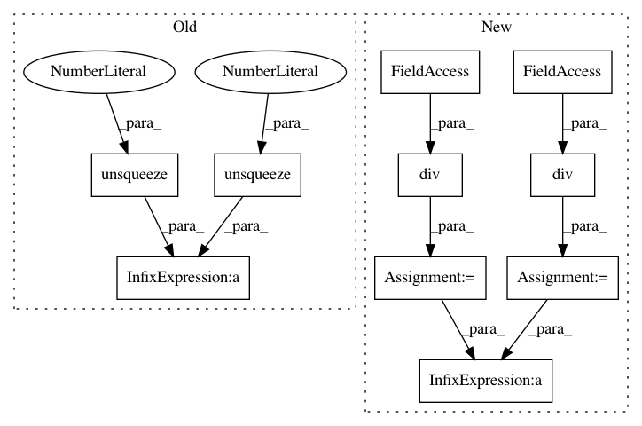

10cb719041b531cb25e485f928ccb545a475a71a,gpytorch/kernels/rbf_kernel.py,RBFKernel,forward,#RBFKernel#Any#Any#,104
Before Change
def forward(self, x1, x2):
lengthscales = self.log_lengthscale.exp().mul(math.sqrt(2)).clamp(self.eps, 1e5)
diff = (x1.unsqueeze(2) - x2.unsqueeze(1)).div_(lengthscales.unsqueeze(1))
return diff.pow_(2).sum(-1).mul_(-1).exp_()
After Change
def forward(self, x1, x2):
x1_, x2_ = self._create_input_grid(x1, x2)
x1_ = x1_.div(self.lengthscale)
x2_ = x2_.div(self.lengthscale)
diff = (x1_ - x2_).norm(2, dim=-1)
return diff.pow(2).div_(-2).exp_()
In pattern: SUPERPATTERN
Frequency: 3
Non-data size: 10
Instances
Project Name: cornellius-gp/gpytorch
Commit Name: 10cb719041b531cb25e485f928ccb545a475a71a
Time: 2018-09-13
Author: gpleiss@gmail.com
File Name: gpytorch/kernels/rbf_kernel.py
Class Name: RBFKernel
Method Name: forward
Project Name: cornellius-gp/gpytorch
Commit Name: 2a77a6beb13bef5200ac9dcedcf1cae812036023
Time: 2018-09-19
Author: gpleiss@gmail.com
File Name: gpytorch/kernels/cosine_kernel.py
Class Name: CosineKernel
Method Name: forward
Project Name: cornellius-gp/gpytorch
Commit Name: 10cb719041b531cb25e485f928ccb545a475a71a
Time: 2018-09-13
Author: gpleiss@gmail.com
File Name: gpytorch/kernels/periodic_kernel.py
Class Name: PeriodicKernel
Method Name: forward